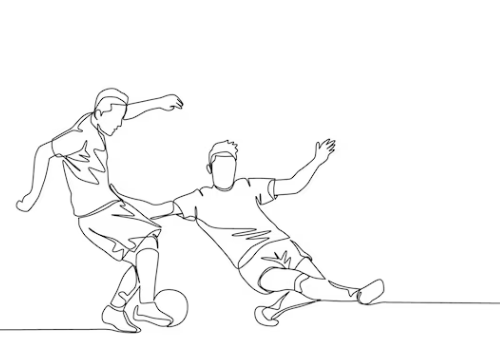
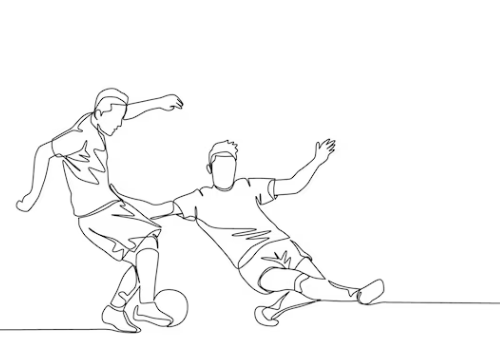

Welcome to Football Players
Here, you can access all the resources you need to learn the basics of football. Whether you're taking your first steps towards becoming a player or simply exploring the excitement of the sport, there's plenty of information and entertainment awaiting you here. So, dive into the enchanting world of football and discover the thrill of the game!
 
